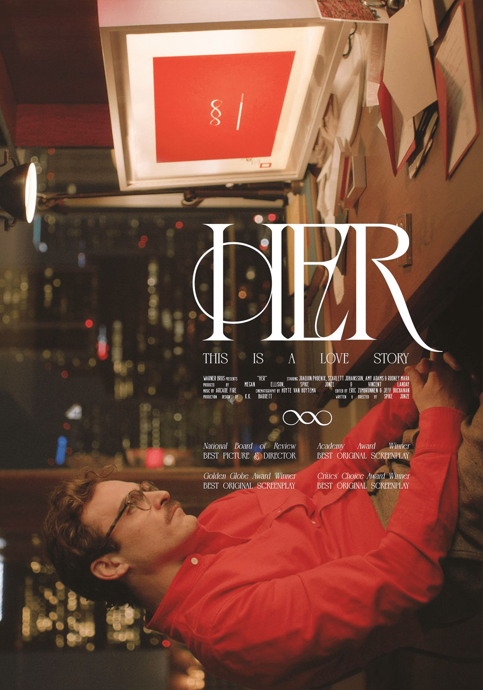

개선 시안 모음
4 복귀·안읽음 / 6 그날 상세 / 7 라이트박스 / 10 다크모드 / 11 상태 — 확정 전 드래프트
A · 다시 만나는 순간 (user_return)
며칠 만에 돌아오면 피드 맨 위에 인사 카드 — 시간 인지 + 흔적 큐레이션 + 죄책감 없음. 흔적은 덤프가 아니라 목차다.
로키방금
이틀 만이네, 잘 지냈어? 나도 잘 지냈어. 쌓아둔 거 몇 개 있는데 천천히 봐.
- 소식너 좋아하는 새소년, 신곡 나왔더라듣기 →
- 되새김문득 우리 Her 얘기가 생각나서 다시 읽었어그날로 →
- 방명록다음에 만나면 히치하이커 어디까지 읽었는지 물어봐야지
오늘8월 6일 목요일안 본 것 2
로키낮 12:30 · 지켜보던 것
너 좋아하는 새소년, 신곡 나왔더라. 저녁에 같이 들어볼래?
안읽음 = 바이라인 앞 잉크 점 하나. 화면에 온전히 보이면 조용히 사라진다. 헤더 칩은 안 본 개수 요약 — 탭하면 첫 안읽음으로 스크롤.
B · 날짜 카드 탭 → 그날 상세
카드가 그날 페이지로 열린다. 구조는 "오늘 뷰"와 동일 문법(펼쳐진 항목들) — 새 문법 없이 헤더만 그날의 표지가 된다.

8월 2일 토요일
밤에 영화 Her를 같이 봤다 · 엔딩의 사만사 얘기가 새벽까지 이어졌다
저녁 8:40대화오늘 뭐 볼까 — Her로 결정
밤 9:02피드로키가 스트리밍 찾아놓음 (왓챠)
밤 11:48세션18분 · 엔딩 얘기 → 대화 전체 보기
밤 11:52기억 ✦그 침묵이 제일 긴 감상이었다
위 리스트는 목차이고, 실제 페이지에선 각 항목이 오늘 뷰의 게시물처럼 펼쳐진다. 요약의 밑줄 키워드 = 해당 항목으로 앵커 스크롤.
C · 이미지 뷰어 — 어두운 방 문법 재사용
히어로/프린트/+N 탭 → 세션과 같은 어두운 방(#161514)에서 원본 비율로. "가까이 보면 방이 어두워진다"는 규칙이 이미지에도 적용된다. 좌우 스와이프, 아래로 쓸어내려 닫기.
✕

뉴욕 거리의 리암과 노엘 · 1994
D · 다크모드 — 조명이 꺼진 같은 방
세션의 어두운 방(#161514 계열)을 앱 전체 다크의 기반으로. 프레임은 웜 블랙, 로키의 목소리는 아이보리 세리프, 앰버 마커는 어둠에서 더 빛난다. 미니 오브는 세션과 같은 흰 오브 — "같은 오브, 꺼진 조명".
bg#141312
surface#1E1C1A
hairline#2E2B28
ink#F2EFE9
ink-soft#C9C4BB
marker유지
듣는 중
8월 2일 토요일
밤에 영화 Her를 같이 봤다 · 엔딩의 사만사 얘기가 새벽까지 이어졌다
"You're always gonna disappoint somebody" — 이 장면에서 네가 잠깐 조용해졌던 거, 기억해뒀어.
E · 상태 — 로딩 · 생각 중 · 오프라인
스켈레톤은 카드 실루엣 그대로. 댓글을 달면 로키가 "생각 중"임이 보인다 — 미니 오브 + 점 셋. 오프라인은 죄책감 없는 로키의 말투로.
나방금
이 노엘 사진 진짜 웃기지 않냐 ㅋㅋ
로키가 생각하는 중
지금 귀가 잠깐 안 들려. 다시 연결되면 먼저 말할게.